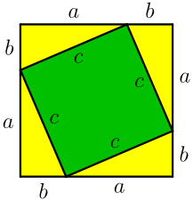
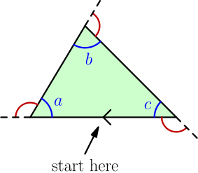
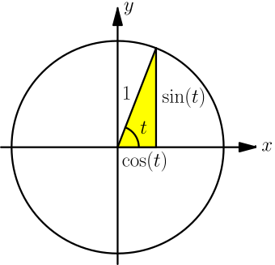
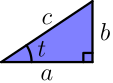
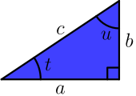
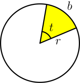
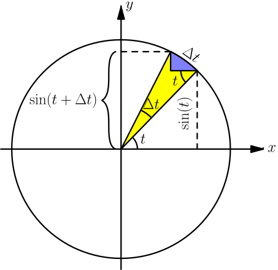
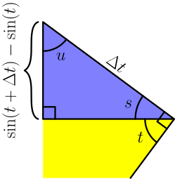
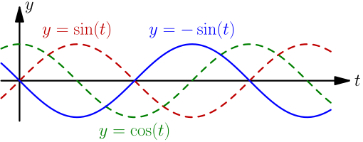

More Geometry and Trig¶
Now you should have a good grasp of geometry and trig basics. In this chapter we'll learn more stuff and focus on some of the things that you might be wondering after reading the previous chapter. Here $y$ axises go up instead of down because most of the math in this isn't as useful for programming as the stuff in the first geometry and trig chapter.
This chapter assumes that you have read the first geometry and trig chapter, and you also need derivatives for some things that will be shown here.
Pythagorean Theorem Proof¶
This is a well-known proof and I like it because it's simple.

Handy thing: $(a+b)^2=a^2+2ab+b^2$
Proof:
$$\begin{align}& \ (a+b)^2 \\ =&\ (a+b)(a+b) \\ =&\ (a+b)a+(a+b)b \\ =&\ aa+ba+ab+bb \\ =&\ a^2+2ab+b^2\end{align}$$We can calculate the total area of the above square in a couple different ways:
- The square's sides are each $a+b$, so the area must be $(a+b)(a+b)$.
- The square consists of the green square whose area is $c^2$ and 4 yellow triangles with area $\frac{ab}{2}$ each. Total area is $c^2 + 4 \frac{ab}{2}$.
We must get the same area with both ways, so we get this equation:
$$\begin{align}(a+b)(a+b) &= c^2 + 4\frac{ab}{2} \\ (a+b)^2 &= c^2 + \frac{4}{2} ab \\ a^2 + 2ab + b^2 &= c^2 + 2ab \\ a^2 + b^2 &= c^2\end{align}$$Triangle Angle Sum¶

In the above picture, the red angle is a half turn minus the blue angle, and we know that half turn is $\tau/2$ radians. So, let's start at the little arrow at bottom and move along the edges clockwise until we arrive at the arrow again. The red angles represent how much we need to turn at each corner, and those turns are $\frac\tau2-a$, $\frac\tau2-b$ and $\frac\tau2-c$.
But in total we turned a full turn or $\tau$ radians:
$$\begin{align}\tau &= \left(\frac\tau2-a\right) + \left(\frac\tau2-b\right) + \left(\frac\tau2-c\right) \\ &= \frac\tau2 - a + \frac\tau2 - b + \frac\tau2 - c \\ &= \frac\tau2+\frac\tau2+\frac\tau2 -a-b-c \\ &= 3\frac\tau2 -a-b-c \\ a+b+c &= 3\frac\tau2-\tau \\ &= 3\frac\tau2 - 2\frac\tau2 \\ &= (3-2)\frac\tau2 \\ &= \frac\tau2\end{align}$$So if we add together all the angles of a triangle we get a half turn. This doesn't seem very amazingly impressive but we'll find this useful later.
Unit circle or triangle?¶
Sine and cosine can be defined with a unit circle or with a triangle. The triangle definition is handy for simple things, but it's usually easiest to use the unit circle if you need to work with angles that are not between $0$ and $\tau/4$ radians. This way you don't need to think about triangles with negative side lengths.
Let's make sure that the definitions are compatible with each other:

We get this by applying triangle trig to the yellow triangle:
$$\begin{align}\sin(t) &= \frac{\sin(t)}{1} \\ \cos(t) &= \frac{\cos(t)}{1} \\ \tan(t) &= \frac{\sin(t)}{\cos(t)}\end{align}$$The first two formulas are obviously true with any $t$, but the last one is a bit more interesting. We found another way to define $\tan$, and it also works with a triangle:
$$\begin{align}\frac{\sin(t)}{\cos(t)} = \frac{b/c}{a/c} = \frac{b \cdot \frac 1 c}{a \cdot \frac 1 c} = \frac b a = \tan(t)\end{align}$$Accurate Sine and Cosine Values¶
Here $\cos^2(t)$ means $(\cos(t))^2$, and people use the $\cos^2$ notation because it's easier and faster to write although it doesn't make much sense.
Here I said that $\sin\left(\frac \tau 6\right) = \frac{\sqrt 3}{2}$ and $\cos\left(\frac \tau 6\right) = \frac 1 2$. I'm sorry to disappoint you, but there's no general and easy way to find accurate $\sin$ and $\cos$ values by hand. However, in many cases there's something special about the angles that allows us to do some other tricks.
The angle in question is $\frac \tau 6$, a sixth of a turn. If a triangle has three sides with equal lengths, the angles will be $\frac{\tau/2}{3}=\frac\tau6$ each (see triangle angle sum above). That's why we can complete the triangle drawn in unit circle like in the image. The angles at top are $\frac{\tau}{12}$ because two $\frac{\tau}{12}$ angles added together is $\frac \tau 6$.
The radius of the unit circle is 1, so we get this on the $x$ axis:
$$\begin{align}\cos\left(\frac \tau 6\right) + \cos\left(\frac \tau 6\right) &= 1 \\ \cos\left(\frac \tau 6\right) &= \frac 1 2\end{align}$$Now we can apply the Pythagorean theorem (proved above) to the yellow triangle and figure out $\sin \frac \tau 6$:
$$\begin{align}\cos^2\left( \frac \tau 6 \right) + \sin^2\left( \frac \tau 6 \right) &= 1^2 = 1 \\ \sin^2\left( \frac \tau 6 \right) &= 1 - \cos^2\left( \frac \tau 6 \right) \\ \sqrt{\sin^2\left( \frac \tau 6 \right)} &= \sqrt{1 - \cos^2\left( \frac \tau 6 \right)} \\ \left| \sin\left( \frac \tau 6 \right)\right| &= \sqrt{1 - \cos^2\left( \frac \tau 6 \right)} \\ &= \sqrt{1 - \left( \frac 1 2 \right)^2} = \sqrt{1 - \frac{1^2}{2^2}} \\ &= \sqrt{\frac 4 4 - \frac 1 4} = \sqrt{\frac 3 4} = \frac{\sqrt 3}{\sqrt 4} = \frac{\sqrt 3}{2}\end{align}$$We know that $\sin \frac \tau 6$ is positive, so $\sin \frac \tau 6 = |\sin \frac \tau 6|$.
Applying the Pythagorean theorem gave us $\cos^2\left(\frac\tau6\right)+\sin^2\left(\frac\tau6\right)=1$, and that isn't limited to $\frac\tau6$ in any way. We could draw a similar yellow triangle with any angle $t$ and we'd get the same result, so $\sin^2(t)+\cos^2(t)=1$ with any $t$.
Why is cosine called cosine?¶
Let's have a look at the blue triangle. We know that it's a triangle, so the sum of the angles must be $\frac \tau 2$.
$$\begin{align}t + u + \frac \tau 4 &= \frac\tau2 \\ t + u + \frac \tau 4 &= 2 \frac\tau{2\cdot2} = \frac\tau4 + \frac\tau4 \\ t + u &= \frac\tau4 \\ u &= \frac \tau 4 - t\end{align}$$We also know these things:
$$\begin{align}&\cos(t) = \frac a c \\ &\sin(u) = \frac a c\end{align}$$So, $\displaystyle\cos(t) = \sin(u) = \sin \left( \frac \tau 4 - t \right)$.
Only angles between 0 and $\frac \tau 4$ make sense as triangle corners, but this works with any other angle as well. Just look at the graphs; the $\frac \tau 4$ offset is quite obvious.
The angle $\frac\tau4 - t$ is also known as the complement angle because when added together, the angles "complete" to $\frac\tau4$:
$$\begin{align}\left( \frac \tau 4 - t \right) + t = \frac \tau 4\end{align}$$Actually "cos" is short for "complement sine" as it's just the sine of the complement.
Derivative of Sine¶
Let's start by finding the derivative of $\sin(t)$ in radians.
By definition, the angle in the image at right is $t=b/r$ radians. But if we do the same thing in a unit circle we know the radius is 1, so $t=b/1=b$. This is one of the reasons why the unit circle and radians are so handy.
Here's another drawing with more stuff in it:

Here we have $\Delta t$ in two different places and you should understand how. The bottom of the blue area is parallel to the x axis, and that's how $t$ appears there as well.
If we take $\sin(t+\Delta t)$ and we take away $\sin(t)$ we're left with the height of the blue area, so the blue area's height is $\sin(t+\Delta t)-\sin(t)$.
The blue area is kind of like a triangle, and with a very small $\Delta t$ it's even more like a triangle. Let's draw a picture of just that:

You might be just looking at this and feeling like $u=t$, but let's prove that correctly. Based on the drawing, $s+t = \frac \tau 4$ because they add up to a quarter-turn corner, and $s+u+\frac\tau4 = \frac \tau 2$ because we can use the triangle angle sum.
$$\begin{align}s+t &= \frac \tau 4 \\ s &= \frac \tau 4 - t\end{align}$$$$\begin{align}\frac\tau4+s+u &= \frac\tau2 \\ \frac\tau4+\left(\frac\tau4-t\right)+u &= 2\frac{\tau}{2\cdot2} \\ \frac\tau4+\frac\tau4-t+u &= 2\frac\tau4 \\ 2\frac\tau4-t+u &= 2\frac\tau4 \\ u&=t\end{align}$$Now we can apply triangle trig to the $u$. I'm using $\approx$ here because the $\Delta t$ line is actually a bit curvy in the circle image.
$$\begin{align}\cos(u) &\approx \frac{\sin(t+\Delta t)-\sin(t)}{\Delta t} \\ \cos(t) &\approx \frac{\sin(t+\Delta t)-\sin(t)}{\Delta t} \\ \cos(t) &= \lim_{\Delta t \to 0} \frac{\sin(t+\Delta t)-\sin(t)}{\Delta t} \\ \cos(t) &= \frac{d}{dt} \sin(t)\end{align}$$I think this is quite nice.
Derivative of Cosine¶
Now we know that $\frac{d}{dt} \sin(t) = \cos(t)$ and $\cos(t) = \sin(\tau/4 - t)$, so this will be really easy. We just need to remember the chain rule.
$$\begin{align}\frac{d}{dt} \cos(t) &= \frac{d}{dt} \sin\left( \frac \tau 4 - t \right) \\ &= \cos\left( \frac \tau 4 - t \right) \cdot \frac{d}{dt} \left( \frac \tau 4 - t \right) \\ &= \cos\left( \frac \tau 4 - t \right) \cdot (0-1) \\ &= -\cos\left( \frac \tau 4 - t \right) \\ &= -\sin\biggl( \frac \tau 4 - \left(\frac \tau 4 - t \right)\biggr) \\ &= -\sin\left( \frac \tau 4 - \frac \tau 4 + t \right) \\ &= -\sin(t)\end{align}$$Let's check the result with graphs:

We know that $\frac{d}{dx} \sin(x) = \cos(x)$, so finding the derivative seems to move the graph left. Similarly, the $-\sin(t)$ graph looks like it's the $\cos(t)$ graph shifted left.